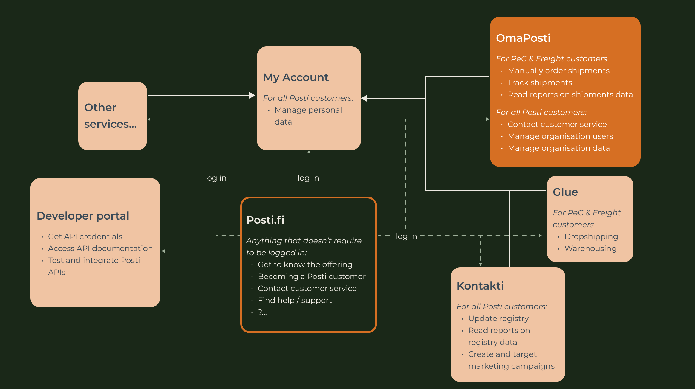
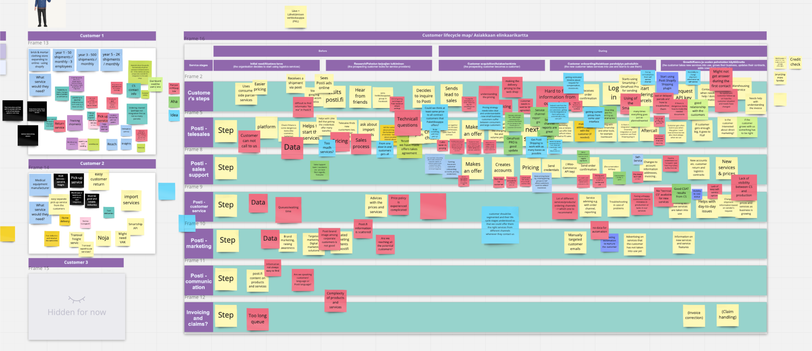
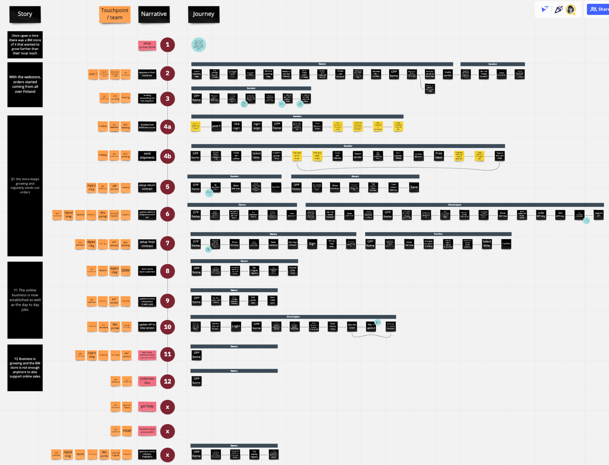
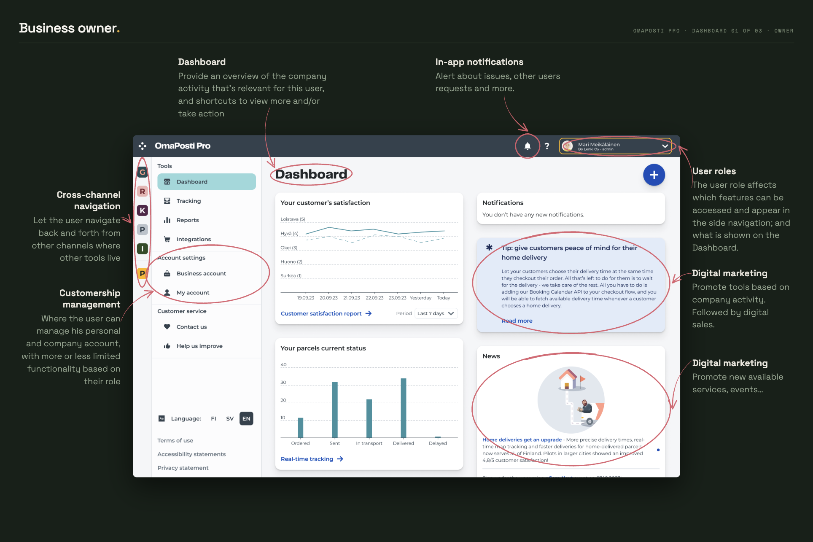
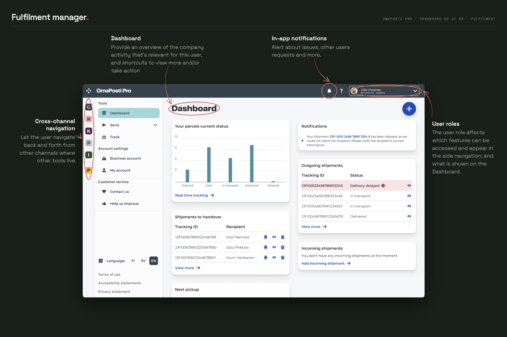
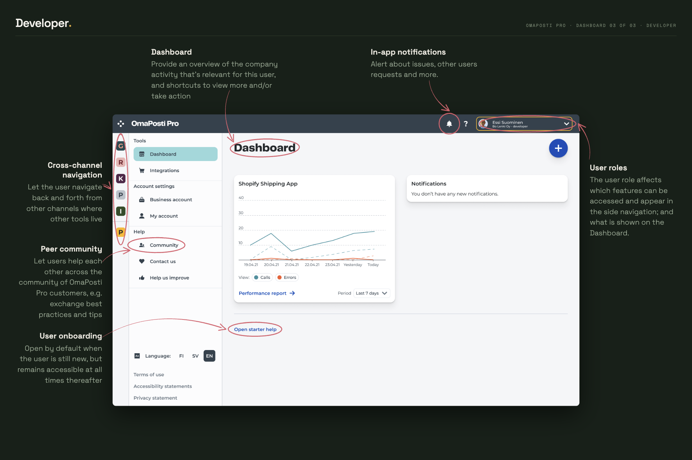

Turning a bunch of legacy, fragmented services into the vision for one single, consistent ecosystem. And managing several stakeholders who didn’t necessarily see the problem.
Client
Posti Group Oyj
Role
Lead designer Strategic designer
Duration
8 months
Outcome
Enablers and feature initiatives started
Access
Open
CONCEPT DASHBOARD, NOV 2021
01 — Context
Posti had launched OmaPosti Pro, a modern “digital home for corporate customers”. The MVP shipped in early 2021 without a long-term vision for the business goals:
Reduce customer churn
Replace expensive legacy systems
Simplify the channels ecosystem
How might we leverage OmaPosti Pro to improve the end-to-end SME customer experience and their retention?

CHANNELS ECOSYSTEM AT THE START OF THE PROJECT – or rather a bunch of standalone products
02 — Discover
What I did
Explore existing research
Stakeholders interviews
SME customers lifecycle mapping with operations
Customers insights
Services are all over the place
Complex and unfair pricing
People with different jobs in the same company use different services
Business insights
Two value propositions for two categories, neither clear to customers
Siloed development and a limiting architecture
Complex, fragmented ecosystem that is hard to maintain
Operations insights
Onboarding a customer can take weeks
New customers are soon left on their own
Everything is done manually

SME CUSTOMER LIFECYCLE — mapped with operations, i.e. telesales, sales support and customer service
03 — Explore
What I did
Stakeholders cocreation workshops
Analyse other complex digital ecosystems
Formulate vision
Ideate concepts
Vision draft
Co-created with stakeholders, the first draft is quite a mouthful — but it got everyone on the same page, and a checkpoint validation from the steering group.
VISION DRAFT 1 — co-created with stakeholders
Tools and channels map
If everything is eventually to live in one place, we needed to know how it looks until then. I mapped every service, where it is needed in the customer lifecycle, and which channel it should live in.
TOOLS AND CHANNELS — every service in the channel it belongs to
Concept exploration: user roles
Access rights are assigned per feature, per product — a long list, and not very accessible.
USER ROLES MATRIX — first version, rather a way to explain the concept of user roles than a foundation document
This idea bundles them under labels matching people’s roles in their company, “customer service” for example.
04 — Deliver
What I did
Stakeholders cocreation workshops
Analyse other complex digital ecosystems
Formulate vision
Ideate concepts
The vision
Customers (companies) and users (people) have very different needs, so I split the vision. It also makes it easier to digest.
A digital Key Account Manager to support SME customers’ growth
For SME customers
The heart of our business users’ digital experience
For business users
New key concepts
What the vision means concretely — the new key concepts:
User roles
Dashboard
In-app notifications
Sandbox mode
Digital marketing and sales
User onboarding to OmaPosti Pro
Cross-channel navigation
Self-service customership management
Self-service customer service
Contextual onboarding to tools and services
Peers community
I built a story around a hypothetical customer and its three employees, and drafted the journeys that make its “chapters”.

THE STORY — one hypothetical customer, three users, and their journeys through Posti's services
1 / 3



THREE DASHBOARDS – the same page shows different content and data, depending on its viewer's user role(s)
Most key concepts are missing a foundation:
Reducing technical dependencies on consumer channels
Thinking in journeys to show the business value to freemium services
Customer segmentation and lifecycle
Users profiles
Simple pricing system
Simple customership system
This is great work and finally we have this kind of overall concepting about Pro (first version, I know) that can also help the steering of our future development. Looks great and can’t wait!!!
05 — Results
Investments
Business and technical stakeholders were enthusiastic — some so much that they started moving without telling me, bringing tools into OmaPosti Pro I hadn’t expected a green light on for a long time.
In early 2022 we prioritised investment themes for the year. Matching the legacy application’s functionality was still the highest priority, but enablers of this vision were next to it. From Q2 2022, enabling initiatives started.
More than we asked for!
New mandate for designers
I had found so many black holes in our knowledge, that I was also campaigning for research and for being more customer-centric. It worked: I gained a mandate to research without asking, where I had previously hit walls when suggesting we talk to customers.
Alice’s work with business experience and OmaPosti Pro has taken our design maturity and vision in corporate services to the next level, and the great collaboration across channels, CS and key stakeholders has created massive impact on both CX and our ways of working.
06 — Learnings
Storytelling
The concept was broad, so I told it as the story of a hypothetical customer. A first for me at that scale — and the comments said it made the complex concept easy to grasp.
Saying no(t now)
The project was massive and needed focus. After juggling it all spring and summer with other projects, I set myself a deadline and dropped everything else in the autumn so I could finally deliver.
07 — Team
Core team
Alice · Lead designer, Business Experience | Business owner, OmaPosti Pro
Accountable
Head of corporate services
Contributors
Business Experience Designers
Consulted
Product Owners · Business Managers · Vice President, SME & Consumer services · Designers · Customer Service · Telesales · Sales Support
08 — On request
Shipped screens, client name, and the two decisions I’d make differently
Under NDA, so it isn’t on the open web — but it exists, it’s written, and I send it to anyone with a reason to read it.

![Tools and channels map: a logged-out business experience — discover the offering, become a customer, get help — leading through one access-management log-in into a logged-in business experience, where every job is grouped by what the user is trying to do (manage account, get help, pay, receive and support customers, manage stock, understand my business, market my business, send, sell) and each item is coloured by whether it lives in OmaPosti Pro or another touchpoint, with asterisks marking ideas not yet built.](../assets/tools-and-channels.png)